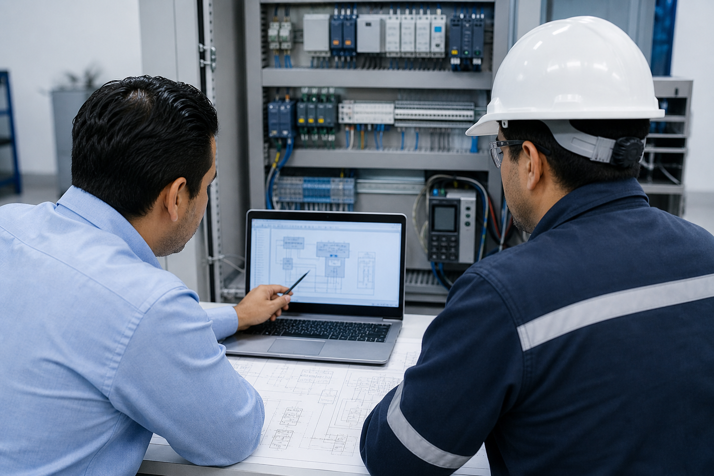
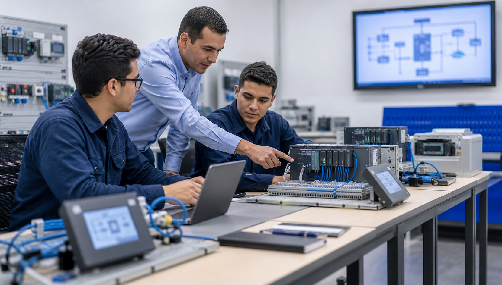

Asesoría técnica
Selección por aplicación, potencia, voltaje, comunicación, ambiente y disponibilidad.
Servicios CEITSA
Impulsa la eficiencia y productividad de tus procesos con las soluciones de automatización industrial de CEITSA. Ofrecemos equipos de alto desempeño y confiabilidad de Delta Electronics y marcas reconocidas en la industria.
Contamos con una amplia gama de productos, entre los que destacan:
En CEITSA te brindamos soluciones integrales para optimizar, controlar y llevar tus procesos de automatización al siguiente nivel.

Acompañamiento técnico
CEITSA acompaña a compras, mantenimiento e integradores para reducir errores de selección, disminuir tiempos de paro y documentar correctamente cada solución de control, potencia y automatización.
Apoyo técnico para revisar conexiones, parámetros iniciales, señales de control, pruebas de operación y recomendaciones antes de entregar el equipo a producción.

Cursos orientados a personal de mantenimiento, operación e integración para mejorar diagnóstico, programación básica, parametrización y uso seguro de equipos.
Servicios disponibles
Selección por aplicación, potencia, voltaje, comunicación, ambiente y disponibilidad.
Apoyo para configurar funciones básicas, protecciones, rampas, entradas, salidas y modos de operación.
Integración de fichas técnicas, equivalencias, listas de materiales y recomendaciones de instalación.
Búsqueda de sustitutos, alternativas compatibles y materiales críticos para mantenimiento.
Soporte a integradores para cotizar, seleccionar y respaldar proyectos con materiales CEITSA.
Acompañamiento posterior a la venta para dudas técnicas, garantías y continuidad de proyectos.
Proceso
Servicio CEITSA